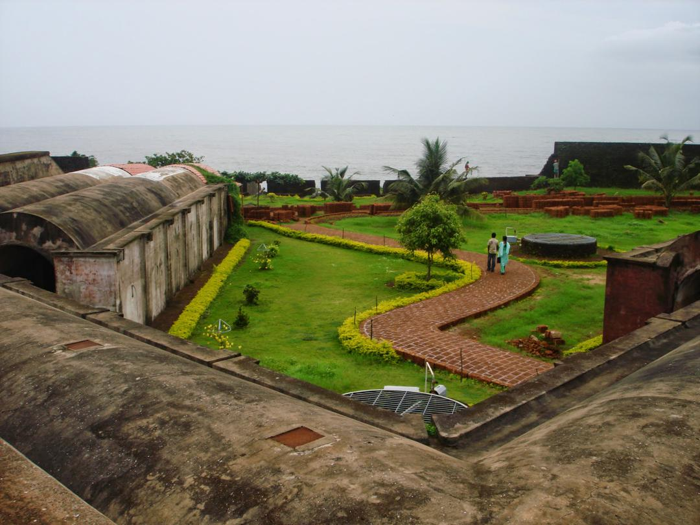
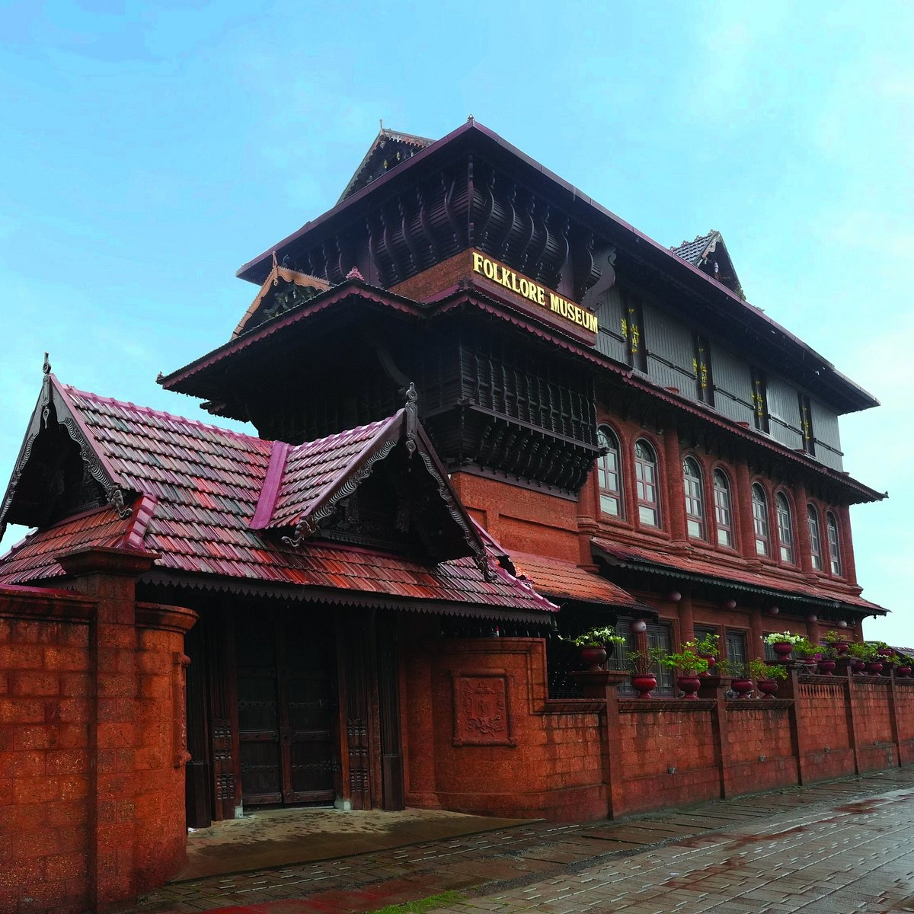
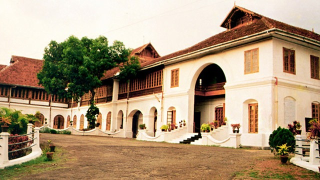
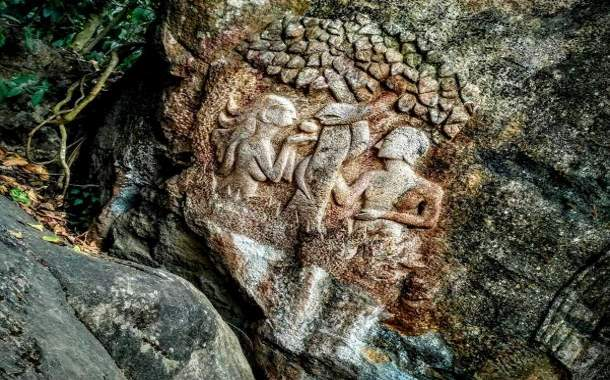

Tellicherry Fort
Add ticket
Tellicherry Fort is in Thalassery a town in Kannur District of Kerala
state in south India.
Thalassery was one of the most important European
trading centers of Kerala.
Folklore Museum
Add ticket
The museum is designed to preserve the cultural heritage of South India
and offers live performances and folk art education.
Hill Palace
Add ticket
Hill Palace is an archaeological museum and palace located in the Tripunithura
neighbourhood of Kochi city in the Indian state of Kerala.
It is the largest archeological
museum in the state and was the imperial administrative office and official residence
of the Cochin Maharaja.
Edakkal Caves
Add ticket
Edakkal caves is the only known place in India with Stone Age carvings.
These caves are located 1200 m above the sea level on Ambukutty Mala.